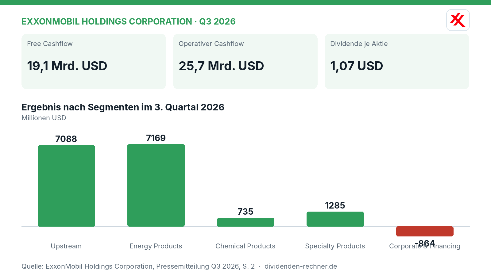
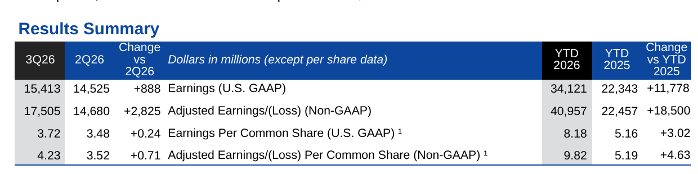
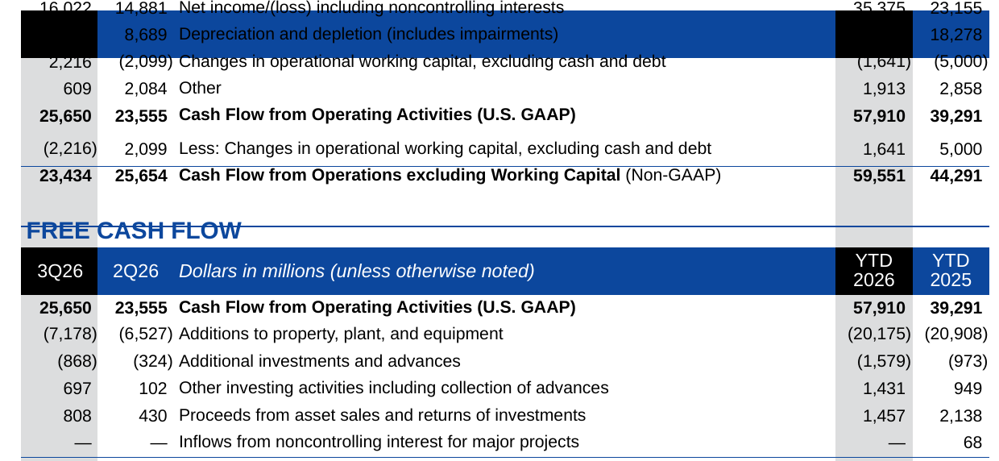

Quartalszahlen

ExxonMobil erzielt im dritten Quartal 15,4 Milliarden US-Dollar Nettogewinn
ExxonMobil meldet starke Quartalszahlen für Q3 2026. Der Nettogewinn nach GAAP liegt bei 15,4 Milliarden USD, der Free Cashflow erreicht 19,1 Milliarden USD.

Kurz gesagt
Gewinn: 15,4 Mrd. USD
- Ergebnis: ExxonMobil weist im dritten Quartal 2026 einen Nettogewinn von 15,4 Mrd. USD (nach GAAP) aus, während das bereinigte Ergebnis bei 17,5 Mrd. USD liegt.
- Kapitalverwendung: Der Konzern zahlt eine Quartalsdividende von 1,07 USD je Aktie, schüttet insgesamt 9,4 Mrd. USD an Aktionäre aus (inklusive 5,1 Mrd. USD für Aktienrückkäufe) und treibt den Schuldenabbau voran.
- Knackpunkt: Sinkende Rohstoffpreise und ein beschleunigter Guyana-Entitlements-Effekt belasten das Upstream-Segment im Quartalsvergleich.
ExxonMobil steigert bereinigte Earnings und generiert starken Cashflow
ExxonMobil legt die Ergebnisse für das dritte Quartal 2026 vor. Der US-Ölgigant verzeichnet einen Nettogewinn nach U.S. GAAP von 15,4 Mrd. USD (oder 3,72 USD je Aktie). Das bereinigte Ergebnis (Non-GAAP) beläuft sich auf 17,5 Mrd. USD oder 4,23 USD je Aktie. Im Vorquartal (Q2 2026) lag der GAAP-Gewinn noch bei 14,5 Mrd. USD.

Eigene Darstellung nach Daten aus: ExxonMobil Holdings Corporation, Quartalszahlen Q3 2026 vom 2026-10-30 · Original.Das Quartal in den Segmenten und Geschäften

Ergebniszusammenfassung. Quelle: ExxonMobil Holdings Corporation, Quartalszahlen Q3 2026 vom 2026-10-30 · Original. Ausschnitt nur zugeschnitten, sonst unverändert.Das Upstream-Geschäft (Förderung) steuert im dritten Quartal 7,09 Mrd. USD zum GAAP-Ergebnis bei, getragen von einer Tagesproduktion von rund 4,50 Mio. Barrel Öläquivalent. Die Sparte Energy Products (Raffinerien und Kraftstoffe) liefert ein starkes Ergebnis von 7,17 Mrd. USD, gestützt durch eine Auslastung der Rohöleinheiten von 100 % an den Raffinerien an der US-Küste und hohe Dieselmengen. Chemical Products bringt 735 Mio. USD ein, während Specialty Products 1,29 Mrd. USD beisteuert.
„In dritten Quartal haben wir uns weiterhin der Herausforderung gestellt, den globalen Energiebedarf zu decken, gestützt auf unsere unübertroffene Skalierung, Integration und technische Leistungsfähigkeit.“
— Darren Woods, Chairman und Chief Executive Officer (aus dem Englischen übersetzt)
Dividende und Aktionärsrendite
Der Konzern schüttet im dritten Quartal insgesamt 9,4 Mrd. USD an seine Aktionäre aus. Darin enthalten sind 4,3 Mrd. USD an Dividenden sowie 5,1 Mrd. USD für Aktienrückkäufe. Für das vierte Quartal ist eine Dividende von 1,07 USD je Aktie beschlossen, die am 10. Dezember 2026 ausgezahlt wird. ExxonMobil blickt damit auf 44 aufeinanderfolgende Jahre mit Dividendenerhöhungen zurück.
Schulden und Cashflow

Cashflow und Free Cash Flow. Quelle: ExxonMobil Holdings Corporation, Quartalszahlen Q3 2026 vom 2026-10-30 · Original. Ausschnitt nur zugeschnitten, sonst unverändert.Der operative Cashflow erreicht im Berichtszeitraum 25,7 Mrd. USD. Nach Abzug von Investitionen und weiteren Posten verbleibt ein Free Cashflow von 19,1 Mrd. USD. Die Nettoverschuldung sank im bisherigen Jahresverlauf um fast 11 Mrd. USD, womit sich der Nettoverschuldungsstand per Ende September 2026 auf 22,1 Mrd. USD beläuft (errechnet aus 34,3 Mrd. USD Bruttoschulden abzüglich 12,2 Mrd. USD Barmitteln).
Einordnung der Marktposition
ExxonMobil profitiert im Jahresvergleich von anhaltenden Struktureinsparungen in Höhe von kumuliert 16,9 Mrd. USD seit 2019 sowie einer optimierten Raffineriekapazität an der US-Golfküste. Dennoch zeigt der sequentielle Vergleich zum zweiten Quartal 2026, dass sinkende Ölpreise und temporäre Effekte in der Förderung das Upstream-Ergebnis bremsen. Der Konzern federt dies durch hohe Auslastung und Effizienzsteigerungen ab.
Die wichtigsten Zahlen im Überblick
| Kennzahl | Wert | Veränderung zum Vorjahr | Quelle |
|---|---|---|---|
| Free Cashflow | 19,1 Mrd. USD | – | S. 1 |
| Operativer Cashflow | 25,7 Mrd. USD | – | S. 1 |
| Dividende je Aktie | 1,07 USD | – | S. 1 |
Quelle: ExxonMobil Holdings Corporation, Quartalszahlen Q3 2026 vom 2026-10-30. Rechenwege eigene Berechnung. Keine Anlageberatung.
Hinweis: Dieser Text dient der allgemeinen Information und ist weder Anlage-, Steuer- noch Rechtsberatung. Kapitalanlagen sind mit Risiken verbunden, bis hin zum Totalverlust.